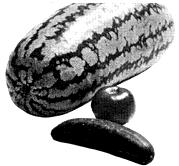

INNOVATOR., BOX 34718, LOS ANGELES, CALIFORNIA 90034
Some things may be rotten, the bread is always "day-old", most likely there won't be a meat department nor any sundries, the hours might not be the most convenient and if you don't find something you want no one will help you. It's cold winter and hot in summer and if it's raining you'll need to keep your raincoat on. Finally, at the out you do your own boxing and receive no Blue Chip stamps! But before you pass by this grocery consider its positive aspects: The fruit is riper at other markets. The lettuce is the most vitamin rich to be found anywhere. Most likely there not be a long line to wait on.
The main advantage, however, is that the grocery of which I speak has neither cash register nor checker: All you wish to take is yours, gratis!
Depending upon your needs, tastes, inhibitions inclinations you can do all, some, or none of 5 food shopping at the "gratis grocery".
Next time you go shopping, take a peek around back of your favorite market . .. . around where the garbage cans are kept. Do it BEFORE you do your regular shopping and-possibly-you'll fill some of your needs. Don't be discouraged if you fail to find anything the first time. Try to learn when the cans are filled and set out and the schedule of the trash collector. You probably won't have to worry about other foragers because their numbers are negligible.
When you come upon full trash cans (or shall we call them "blemished food bins" . . . one man's trash being another man's treasure), roll up your sleeves (I forgot to tell you to wear your grubbies) and inspect the contents.
If there's an empty barrel near by, dump unusable items into it as you empty the first can. Have something handy, preferably waterproof, for the salvagable finds. Just climb on in (as I do) if the trash container is one of those large rectangular bin affairs.
Sometimes there is real trash-glass, floor sweepings, and nails-so you must exercise some caution as to where you step and reach. (Some markets are very fastidious and separate trashy-trash from the food: Could you ask for better service?
Since everything is gratis, you needn't be very choosy; I do a second leisurely sorting when I get home. But even though I try to spend as little time as possible "on the job" I have never been molested while rummaging. There have been times when clerks have come out to dump more trash but I just smile and go about my business.
If questioned you can always say you're getting it for your chickens, rabbits, horses or pigs. Maybe you have a pet elephant. Or how about a vegetarian lion? Better yet, you can excuse any ignorance of what animals eat by saying you're collecting for a friend.
I've foraged everything from soup to nuts in garbage cans. One day, wobbling away on my bicycle, I was so overloaded I dropped my prize find and sadly watched as the watermelon splattered on the parking lot pavement.
Lettuce is the standby; the deep green nutritious outer leaves are always discarded. Blemished fruits and vegetables abound (I just cut out the bad spots). Don't expect to find spaghetti, corn flakes or other devitalized items. They don't spoil and not even bacteria can live on them!
I've found that, usually, the bigger the supermarket the better the foraging. But it varies and you just have to look around. If at first you find mostly empty cans-or full ones with no salvagable food in them-and right away you give up, you're probably not very hungry and you probably have money to spend.
Or maybe you think it's beneath your dignity to look in the garbage and eat what someone else wouldn't buy. That's okay. That's why there's always plenty for me.-THE GATHERER
|
 |
|
|